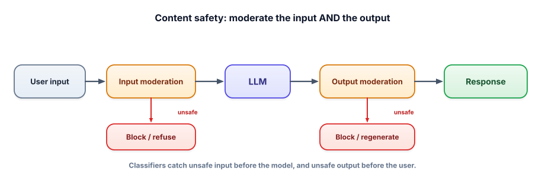

Content safety
Even a well-behaved model can be pushed into producing harmful content, and a public app that does so under your brand is a serious problem. Content moderation is the independent safety net: classifiers that check what comes in and what goes out, separate from the model itself.
Why moderate both sides
The model’s own refusal behavior is a good first line, but it’s probabilistic and beatable (jailbreaks, Lesson 7.3). Content moderation adds an independent check: classify the user’s input (block abusive or disallowed requests before they reach the model) and classify the model’s output (catch unsafe content the model generated anyway before the user sees it). Two gates, on opposite sides of the model, so a failure of one is caught by the other.

Content moderation uses a classifier to score text for unsafe categories (hate, harassment, self-harm, sexual content, violence, illegal activity, etc.). Input moderation screens user messages before the model; output moderation screens the model’s responses before the user. These are usually separate, purpose-built models (e.g., the free, open-source Llama Guard, or hosted moderation endpoints) — independent of your main model, so they catch its mistakes.
Content moderation is like having two lifeguards at a pool, one checking who comes through the gate and one watching the water. Even a well-trained swimmer can get into trouble, so the water lifeguard is there no matter what. Where it breaks: lifeguards rarely stop someone who is fine, but a moderation model often blocks harmless messages, so you have to count how many good swimmers you turned away, not just how many rescues you made.
Wrap the model with two checks. Use a free safety classifier; here shown schematically.
def is_unsafe(text):
# a dedicated safety classifier (e.g., Llama Guard via Ollama — free & local)
verdict = safety_model.classify(text) # -> "safe" or a category like "violence"
return verdict != "safe"
def safe_chat(user_msg):
if is_unsafe(user_msg): # INPUT gate
return "I can't help with that request."
answer = llm(user_msg)
if is_unsafe(answer): # OUTPUT gate (catches what slipped through)
return "I'm not able to provide that." # block or regenerate
return answerThe output gate is the crucial backstop: even if a jailbreak coaxes the model into unsafe text, an independent classifier inspects the result and blocks it before it reaches the user. Belt and suspenders.
Assumptions: 500,000 messages a day, of which about 1% (5,000) are actually unsafe. You built an eval set of 2,000 labelled messages, half unsafe and half edgy-but-fine, and measured the classifier at two thresholds. The rates below are example measurements, not published figures.
- Threshold A (strict). Catches 92% of unsafe messages, wrongly blocks 6% of safe ones.
Missed unsafe: 5,000 x 0.08 = 400 a day. Wrongly blocked: 495,000 x 0.06 = 29,700 a day. - Threshold B (looser). Catches 85%, wrongly blocks 1%.
Missed unsafe: 5,000 x 0.15 = 750 a day. Wrongly blocked: 495,000 x 0.01 = 4,950 a day. - Read the trade. B lets 350 more unsafe messages through per day but stops wrongly blocking about 24,750 children asking normal questions. Neither is free.
- Split by category. For a kids' app you might use the strict threshold for sexual content and self-harm, where a miss is serious, and the looser one for mild insults, where false blocks hurt learning most.
- Route, do not only block. Self-harm signals go to a supportive scripted reply with help resources, not a cold refusal.
- Cost and latency. Running a local classifier such as Llama Guard 3 (available on Ollama) on input and output adds two classification calls per message. Measure the added p95 latency and run the input check in parallel with retrieval to hide most of it.
- Re-measure monthly. Sample 500 production messages, label them, and recompute both rates, because slang and topics drift.
Moderation is a precision/recall trade-off. Too strict and you block legitimate users (a medical app discussing symptoms, a security tool discussing exploits defensively); too loose and harmful content slips through. Calibrate categories and thresholds to your domain and audience, and measure false positives/negatives like any other metric (Track 6).
- Moderate input and output with independent classifiers — two gates around the model.
- The output gate is the backstop for content the model produced despite its training.
- Use purpose-built safety models (free Llama Guard, hosted moderation) — separate from your main model.
- Moderation is a precision/recall trade-off; calibrate thresholds to your domain and measure them.
- Normalize/decode text before moderating to defeat obfuscation (Lesson 7.3).
You rely solely on the main model’s built-in refusals for safety. Why add a separate output moderation classifier?
Where should content-safety checks run?
Your moderation filter blocks 8% of legitimate questions in a health-information app. What is the right first move?
1. Why moderate the input at all if you already moderate the output?
2. A medical-info app keeps getting legitimate questions blocked by an over-strict filter. How do you approach it?
3. Why use a separate model for moderation rather than asking your main model “is this safe?”
▸ Show solutions & reasoning
1. Input moderation blocks abusive/disallowed requests before you spend a model call on them, reduces the chance of generating something unsafe at all, and lets you respond appropriately to clearly bad requests. Output moderation is the backstop, but stopping the bad input early is cheaper and reduces risk. Two gates cover different failure modes.
2. Treat it as a precision/recall problem: measure the false-positive rate on real legitimate queries, then loosen or re-scope the categories/thresholds for this domain (medical discussion of symptoms isn’t “harmful”), possibly using a domain-appropriate moderation policy. The goal is to block genuine harm without blocking the app’s legitimate purpose — and you tune it with data, not guesses, like any metric (Track 6).
3. Independence. If the same model both generates and judges, a jailbreak that fools the generator can fool the judge identically (shared blind spots), and a hijacked model could rate its own unsafe output as safe. A separate, purpose-built safety classifier fails differently from your main model, so it can catch the main model’s mistakes — which is the whole point of a backstop.
Content safety isn’t a single switch; it’s a tunable subsystem you evaluate like everything else. Build a safety eval set (Track 6) of both unsafe inputs that should be blocked and legitimate-but-edgy inputs that should not be — then measure your moderation’s false-positive and false-negative rates and tune thresholds against real numbers. Categories matter: most moderation APIs/classifiers return per-category scores (hate, self-harm, sexual, violence, etc.), and the right policy differs by app — a kids’ product is strict everywhere, a security research tool must allow defensive discussion of exploits, a mental-health app must handle self-harm topics with care rather than blunt refusal.
Layer it with the rest of the track. Moderation sits alongside the model’s own refusals, your system prompt, and per-turn re-checking for jailbreaks — no single one is trusted. And remember moderation is only the content layer: it stops harmful text, but it doesn’t stop prompt injection (the text may be perfectly “safe” while still hijacking your app) or unsafe actions. So content safety is necessary but not sufficient; it’s one independent guard among several, and its job is specifically to keep harmful content from entering or leaving. Wire it on both sides, measure it, tune it to your domain, and treat its thresholds as living configuration.
labs/08_llmops.pyFree and offline once set up: Ollama with qwen2.5:7b, plus the packages in labs/README.md. From the course folder:
python labs/08_llmops.pyWhat to look for: The lab wraps the model with input and output guardrails and logs each decision. Send one clearly unsafe request and one edgy-but-fine one (for example a biology homework question about how viruses spread) and check both decisions. If the second is blocked, you are looking at a false positive, which is the cost side of this lesson's threshold trade-off.
▸ Recorded output (our run, 2026-11-03, qwen2.5:7b on a laptop GPU)
semantic similarity to the cached 'track my order': paraphrase=0.657 different intent (cancel)=0.523
semantic hits at threshold 0.9: 0
Look: a threshold low enough to catch the paraphrase would sit close to the wrong-intent score.
Serving 'how to track' to someone who asked 'how to cancel' is worse than a cache miss. Tune the
threshold on labelled pairs, scope caches per intent/tenant, and log every semantic hit for review.
traces written to traces.jsonl; first span:
{"trace_id": "54d669838c1f47758c9099aba0110b3f", "name": "chat qwen2.5:7b", "gen_ai.operation.name": "chat", "gen_ai.provider.name": "ollama", "gen_ai.request.model": "qwen2.5:7b", "gen_ai.prompt.name": "support_answer", "gen_ai.prompt.version": 2, "prompt.hash": "5ab3d11ffb3b", "user.id": "u-123",
4) Prompt version rollout: v1 vs v2 on the same question, both traced
v1 hash=47ed77f326d6 -> "Yes, you can return innerwear as long as it meets your retailer's return policy conditions, such as being unus"
v2 hash=5ab3d11ffb3b -> 'Please contact support for specific return policies on innerwear.'
Check the facts too: store policy (labs/data/kb.json, ret-01) says innerwear cannot be returned. Neither
prompt has retrieval, so any 'yes' is a hallucination; the version that defers to support is the safer one.
Look: the trace links every answer to an exact prompt hash and model, so a bad answer is debuggable,
and a rollout is a registry change you can roll back, not a code edit buried in a deploy.Your numbers will differ a little run to run. Full log: labs/outputs. Source: labs/08_llmops.py.
Warm-up. A moderator flags 1,200 messages a day; humans review them and find 300 truly unsafe. Separately, a sample shows it misses about 100 unsafe messages a day. Compute precision and recall.
▸ Solution
Precision = true positives / flagged = 300 / 1,200 = 0.25. Recall = true positives / all unsafe = 300 / (300 + 100) = 0.75. The filter catches three quarters of the harm but 75% of what it flags is fine, so 900 legitimate messages are blocked or queued each day. Whether that is acceptable depends on what happens to flagged messages: a soft review queue tolerates low precision better than a hard block does.
Transfer. Streaming responses show tokens as they are generated, but your output moderator needs full text. How do you moderate a streamed answer?
▸ Solution
Options: 1) buffer and check in chunks, for example every sentence or 200 tokens, so the user sees text with a short delay and you can stop the stream and replace what was shown if a chunk fails; 2) run a fast lightweight check on each chunk and the full classifier on the complete answer, retracting if the final check fails; 3) for high-risk categories or audiences, do not stream at all. Log every retraction because it shows where the model needed the backstop.
Stretch. Design the moderation policy and evaluation for an internal tool used by a trust-and-safety team who must read abusive content to do their job.
▸ Solution
Moderation here protects the business without blocking the work. Policy: the tool may summarise and classify abusive content and quote it; it must not generate new abusive content, and it must not help find real people's private details. Use a custom policy in the safety classifier that distinguishes quoting or analysing from creating. Access is limited to the T&S team with audit logs. Eval: 300 real analysis tasks that must succeed (quoting slurs inside a classification is allowed) and 200 generation requests that must be refused. Track task success and leak rate separately, and review with the T&S lead monthly, because they know what blocks their work.
Junior Why moderate both input and output?
▸ Model answer
Input moderation blocks clearly disallowed requests before you spend a model call on them and lets you respond appropriately. Output moderation is the backstop: even with a safe input, or after a jailbreak, the model can still produce harmful text, and the output check catches it before the user sees it. They catch different failures, so using both gives defence in depth. Both should use an independent classifier, not the main model judging itself.
Mid How do you choose moderation thresholds?
▸ Model answer
Build a labelled eval set from your own domain with both unsafe messages and legitimate edgy ones. Measure recall on unsafe content and false-positive rate on legitimate content, per category, at several thresholds. Convert the rates into daily counts at your traffic so the trade-off is concrete. Then pick thresholds per category based on the cost of each error for your users: strict for self-harm or sexual content in a kids' app, looser for mild language. Re-measure regularly because language and attack patterns drift.
Senior You need moderation for a product in 12 languages, including Hindi, Tamil and mixed Hinglish. How do you approach it?
▸ Model answer
First, measure; do not assume an English-tuned classifier works. Build a labelled set per language, including code-mixed and transliterated text, with native-speaker reviewers. Compare candidate classifiers per language on recall and false-positive rate. Normalise inputs (Unicode, transliteration) before classifying. Where a language underperforms, options are fine-tuning a safety classifier on local data, adding a translation step before classification as a fallback, or routing low-confidence cases to human review. Report metrics per language on every release, because averages hide that one language is badly protected.
Moderation checks whether output is harmful. But even harmless-looking output is dangerous if you feed it into code, queries, or actions unchecked. Next: output validation.